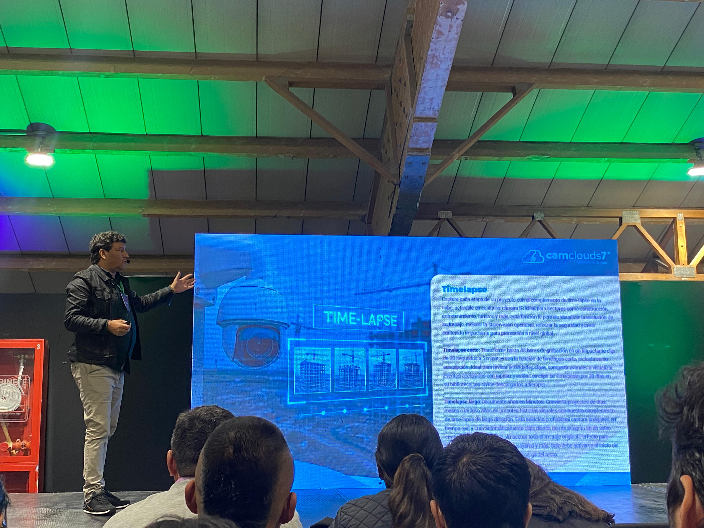
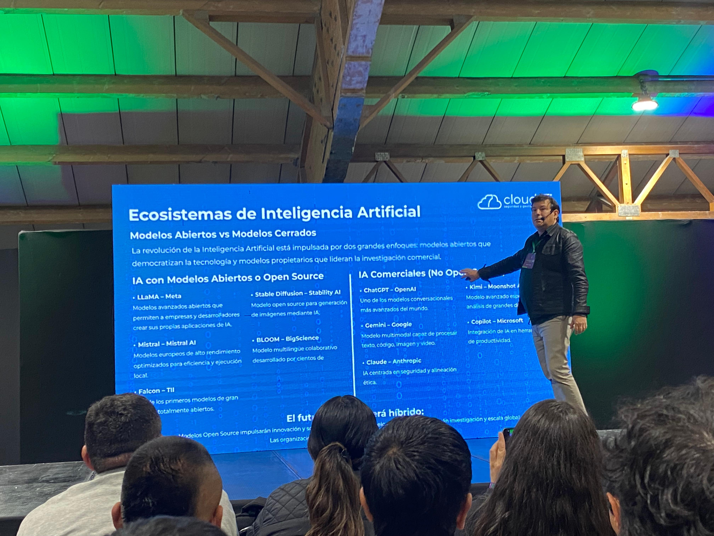
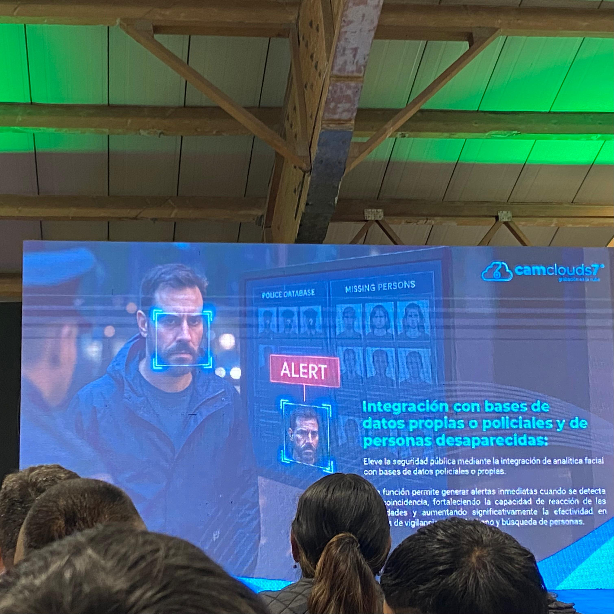
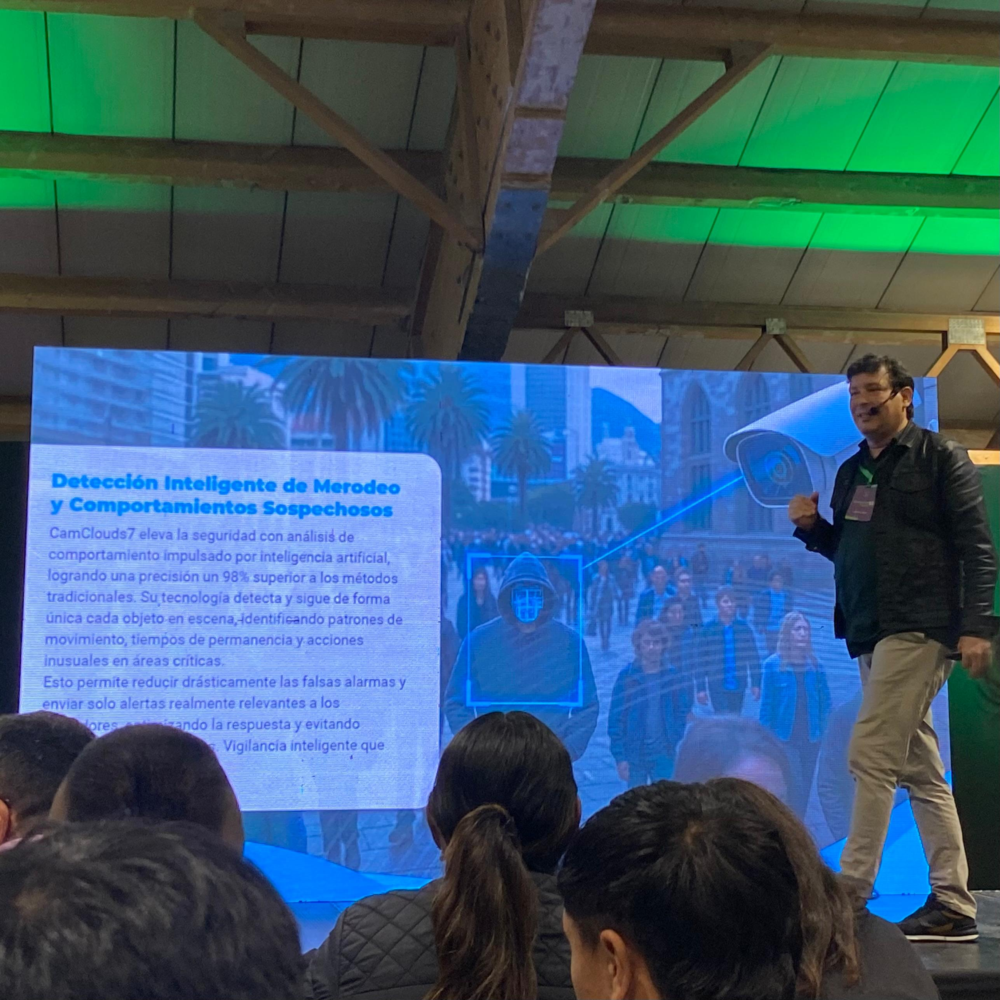
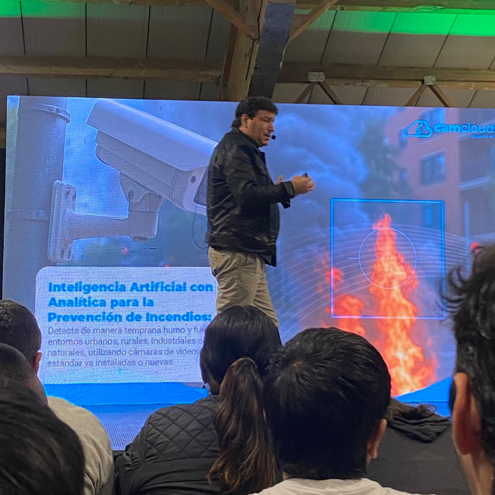

Inteligencia Artificial en Videovigilancia
Conferencista / Speaker: Juan Fernando Ruiz Restrepo
Tema principal / Main Topic: Inteligencia Artificial en Videovigilancia / Artificial Intelligence in Video Surveillance





Resumen(ES):
La conferencia presentó cómo la inteligencia artificial está revolucionando los sistemas de videovigilancia al permitir no solo la captura de imágenes, sino también el análisis inteligente de datos para mejorar la seguridad y la toma de decisiones. Se destacó Cloud7, una solución tecnológica desarrollada para fortalecer los protocolos de seguridad mediante la identificación de comportamientos sospechosos y la generación de alertas en tiempo real. Asimismo, se explicó el funcionamiento de Omnilink7, un dispositivo capaz de conectar hasta 50 cámaras y reducir considerablemente los tiempos de respuesta ante incidentes. Entre sus aplicaciones se encuentran la detección de hurtos, la localización de personas, el reconocimiento de placas vehiculares, el análisis de multitudes y la prevención de desastres. La conferencia también abordó tecnologías como la biblioteca YOLO, los modelos de redes neuronales convolucionales (CNN) y la optimización mediante GPU, herramientas fundamentales para el desarrollo de sistemas avanzados de videovigilancia. Estas soluciones ya se implementan en ciudades y países como Medellín, México, Nueva York y Japón. Como conclusión, se resaltó que, aunque la inteligencia artificial ofrece grandes beneficios para la seguridad y la eficiencia operativa, su implementación debe estar guiada por criterios éticos y un uso responsable de la tecnología.
Summary (EN):
The conference presented how artificial intelligence is revolutionizing video surveillance systems by enabling not only image capture but also intelligent data analysis to improve security and decision-making. One of the main topics was Cloud7, a technological solution developed to strengthen security protocols through the identification of suspicious behavior and the generation of real-time alerts.The speaker also explained the functionality of Omnilink7, a device capable of connecting up to 50 cameras and significantly reducing response times to security incidents. Its applications include theft detection, person tracking, license plate recognition, crowd analysis, and disaster prevention. Additionally, the conference covered technologies such as the YOLO library, Convolutional Neural Network (CNN) models, and GPU optimization, which are essential tools for developing advanced video surveillance systems. These solutions are already being implemented in locations such as Medellín, Mexico, New York, and Japan.In conclusion, it was emphasized that although artificial intelligence offers significant benefits for security and operational efficiency, its implementation must be guided by ethical principles and the responsible use of technology.